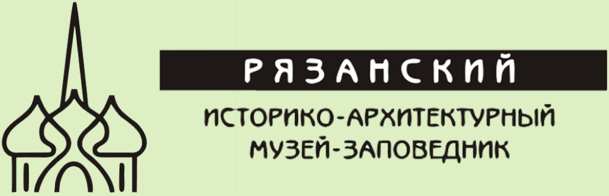

<!DOCTYPE html>
<html>
<head>
<meta charset='UTF-8'>
<title>Раздел1</title>
<style>body {
    font-family: Arial, sans-serif;
    margin: 0;
    padding: 0;
    background-color: #DDEFC3;
}
a {color: black;text-decoration: none; text-align: left
;}a:hover {color: #f90;}


codeWhite {
    background: white;
    border-radius: 6px;
    color: black;
    display: block;
    font: 14px/24px "Source Code Pro", Inconsolata, "Lucida Console", Terminal, "Courier New", Courier, sans-serif;
    padding: 24px 15px;
    text-align: justify;
}

code_acc8a4 {
    background: #acc8a4;
    border-radius: 6px;
    color: #fff;
    display: block;
    font: 14px/24px "Source Code Pro", Inconsolata, "Lucida Console", Terminal, "Courier New", Courier, sans-serif;
    padding: 24px 15px;
    text-align: center;
}

code_83A98B {
    background: #83A98B;
    border-radius: 6px;
    color: #fff;
    display: block;
    font: 14px/24px "Source Code Pro", Inconsolata, "Lucida Console", Terminal, "Courier New", Courier, sans-serif;
    padding: 24px 15px;
    text-align: center;
    float: left;
    width: 22%;
}

code_logo {
    background: #83A98B;
    border-radius: 6px;
    display: block;
    font: 14px/24px "Source Code Pro", Inconsolata, "Lucida Console", Terminal, "Courier New", Courier, sans-serif;
    padding: 24px 15px;
    text-align: center;
}

code_header {
    background: #acc8a4;
    border-radius: 6px;
    display: block;
    font: 14px/24px "Source Code Pro", Inconsolata, "Lucida Console", Terminal, "Courier New", Courier, sans-serif;
    padding: 24px 15px;
    
    text-align: center;
}

code_DDEFC3 {
    background: #DDEFC3;
    border-radius: 6px;
    color: #fff;
    display: block;
    font: 14px/24px "Source Code Pro", Inconsolata, "Lucida Console", Terminal, "Courier New", Courier, sans-serif;
    padding: 24px 15px;
    text-align: center;
    float: left;
    width: 22%;
}

code {
    background: #2db34a;
    border-radius: 6px;
    color: #fff;
    display: block;
    font: 14px/24px "Source Code Pro", Inconsolata, "Lucida Console", Terminal, "Courier New", Courier, sans-serif;
    padding: 24px 15px;
    text-align: center;
}

header {
    padding: 10px;
    align-items: center;
}

#logo {
    width: 40px;
    height: 40px;
    margin-right: 10px;
}

#title {
    font-size: 24px;
}

#container {
    display: flex;
}

section {
    float: left;
    width: 25%;
}


aside {
    float: right;
    width: 100%;
    
}


#left {
    padding: 10px;
    border-radius: 6px;
    float: left;
    width: 100%;
}

#right {
    overflow-y: auto;
    padding: 10px;
    margin: 0 1.5% 24px 1.5%;
    border-radius: 6px;
    width: 96.8%;
    height: 89vh;
}

#rightH {
    padding: 10px;
    margin: 0 1.5% 24px 1.5%;
    border-radius: 6px;
    width: 96.8%;
}


#language,
#power {
    text-align: center;
    padding: 10px;
    border: 1px solid #ccc;
    margin-bottom: 10px;
}

#languageBtns,
#powerBtn {
    display: flex;
    justify-content: space-between;
    margin-top: 10px;
}

.separator {
    width: 100%;
    height: 1px;
    background-color: #DDEFC3;
    margin: 10px 0;
}


button {
    background: #83A98B;
    border: none;
    border-radius: 4px;
    color: black;
    cursor: pointer;
    margin: 5px;
    padding: 26px;
}

footer {
    margin-bottom: 0;
    margin: 0 1.5% 24px 1.5%;
}</style>
</head>
<body>
</body></html>


<!DOCTYPE html>
<html lang="en">
<head>
    <meta charset="UTF-8">
    <meta name="viewport" content="width=device-width, initial-scale=1.0">
    <title>Человек и природа</title>
</head>
<body>
    
<div id="container">
    
        <section>
            <div id="left">
                
                <code_logo>
                    <h1>logo</h1>   
                </code_logo>
                
            </div>
        </section>
        <aside>
            <div id="rightH">
                <code_header>
                    <h1>Человек и природа</h1>
                </code_header>
            </div>
        </aside>
</div>
    
    <div id="container">
        <section>
            <div id="left">
                
                <code_acc8a4>
                    <div>
                        <a href='Раздел1/Экспонат1_Раздел1_RUS.html'><h2><p> Переяславль Рязанский (XI–XVIII вв.)</p></h2></a><br>
                        <a href='Раздел2/Экспонат1_Раздел2_RUS.html'><h2><p> Рязань – центр губернии (1778–1929 гг.)</p></h2></a><br>
                        <a href='Раздел3/Экспонат1_Раздел3_RUS.html'><h2><p> Рязань в XX веке</p></h2></a><br>
                        <a href='Галерея/Экспонат1_Галерея_RUS.html'><h2><p> Переяславль Рязанский (XI–XVIII вв.)</p></h2></a><br>
                    </div>    
                </code_acc8a4>
                
                <div class="separator"></div>
                <code_acc8a4>
                    <button type="submit"><b>&#9834;&#9834;&#9834;</b></button>
                    <button type="submit"><a href='Экспонат1_Раздел1_ENG.html'><b>EN</b></a></button>
                    <button type="submit"><a href='Экспонат1_Раздел1_CH.html'><b>CH</b></a></button>

                </code_acc8a4>
                <div class="separator"></div>
                <code_acc8a4>
                    
                </code_DDEFC3>
            </div>
        </section>

        <aside>
            <div id="right">
                <codeWhite>
                  <p>Переяславль Рязанский (XI–XVIII вв.)</p>
<p>1.1. Основание города Переяславля Рязанского</p>
<p>Письменные источники</p>
<p>Запись о заложении Переяславля была обнаружена в XIX в. на полях книги XV–XVI вв. с религиозными текстами – Псалтыри. Кто-то из ее владельцев на свободном месте переписал из недошедшего до нас источника важное для него сообщение: «В лето 6603 (1095 г. по современному летоисчислению) был заложен град Переяславль Рязанский у церкви святого Николы Старого». У историков есть большие сомнения в достоверности этой даты, потому что она взята из неизвестного науке источника. Возможно, при переписывании была допущена ошибка в датировке, т.к. в летописях Переяславль впервые упомянут лишь спустя 200 лет, под 1300 годом. </p>
<p></p>
<p>Лист из Следованной псалтыри с записью о заложении Переяславля Рязанского.</p>
<p>Археологические исследования</p>
<p>Какова же реальная дата основания города? На помощь приходит археология.</p>
<p>Первые поселения человека на кремлевском холме возникли еще в эпоху бронзы и раннего железного века); (II тыс. до н.э. – I тыс. н.э.). </p>
<p>Если верить дате из Псалтыри, город основан в XI веке (1095 г.). Материалов XI в. археологам обнаружить пока не удалось. Однако следует помнить, что в археологическом отношении территория Кремля Переяславля изучена довольно слабо, и мы вправе ждать новых открытий.</p>
<p>По имеющимся в настоящее время данным начало хозяйственного освоения этой территории относится к середине XII в., то есть задолго до того, как город появился на страницах летописи.</p>
<p>Еще одним аргументом в пользу основания Переяславля Рязанского в середине XII в. является общеисторическая ситуация. Именно в то время появляются новые города, идет обособление Рязанских земель и выделение их в самостоятельное княжество. </p>
<p>1.2. Кем был основан Переяславль Рязанский</p>
<p>Заложение города приписывают одному из черниговских князей – Ярославу Святославовичу, внуку Ярослава Мудрого.</p>
<p>Не вызывает сомнений, что город был основан выходцами из южнорусских земель. Они принесли на рязанскую землю свои исконные именования рек и городов. Так появилось название города – Переяславль Рязанский и близлежащих рек – Трубеж, Лыбедь и Дунайчик.</p>
<p>1.3. Переяславль XIV-XVII вв. – город-крепость </p>
<p>В начале своей истории Переяславль являлся небольшой крепостью, которая занимала северо-восточную часть Кремлёвского холма. В первой половине XIV в. Переяславль становится столицей Рязанского княжества и к XV в. занимает всю территорию холма (около 27 га).</p>
<p>В начале XVI в. Рязанское княжество вошло в состав Московского государства. Отныне Переяславль Рязанский являлся составной частью Засечной черты – огромной по своей протяженности линии оборонительных укреплений, призванной защищать юго-восточные рубежи России от татарских набегов. Военное значение город сохранял вплоть до конца XVII в. Наиболее полную картину его внешнего облика дают нам документы и описания данного столетия.</p>
<p>Кремль – укрепленное ядро русского города, центральная и наиболее древняя его часть. В нем находился княжеский двор, главные каменные храмы, усадьбы знати и ремесленные мастерские, обслуживавшие княжеский двор. Кремль Переяславля имел довольно мощные укрепления, состоящие из земляных валов, на которых располагались деревянные стены и башни. Стены имели высоту от пяти до семи метров. Башен было 13 – четыре проезжих и девять глухих. Высота башен составляла 14–18 м. Только главная башня, Глебовская, к которой вел одноименный мост, была каменной. С трех сторон город был окружен реками Трубежем и Лыбедью, с запада был глубокий ров.</p>
<p></p>
<p>В.А. Кузьмин Переяславль Рязанский в XVII в.</p>
<p>Помимо Кремля основными районами средневекового Переяславля Рязанского были Острог, Верхний и Нижний посады. Острог впервые упомянут в летописях в 1513 г., это укрепленная часть города, примыкавшая к Кремлю с наиболее уязвимой западной напольной стороны и представлявшая собой дополнительную линию обороны. Он был защищен надолбами из заостренных сверху дубовых колод, глубоким рвом и линией частокола с 15-ю башнями. </p>
<p>Посады – торгово-ремесленные поселения, расположенные вне городских стен к югу и западу от кремля. C XVII в. в Переяславле также начинают формироваться слободы служилых людей – Пушкарская, Стрелецкая, Ямская. На северо-западной окраине города располагалась церковная Архиерейская слобода, восточнее Кремля – Выползова слобода.</p>
<p></p>
<p>В.А. Кузьмин Торг Переяславля Рязанского в XVII в.</p>
<p>Весь Переяславль имел плотную застройку, основная часть строений была деревянной.</p>
<p>Археологам удалось открыть средневековые улицы с деревянными мостовыми. Конструкция уличной мостовой традиционна: ее основанием служили три лаги, размещенные вдоль улицы параллельно друг другу. На эти лаги, поперек них, плоской стороной вверх укладывались дубовые плахи. Ширина центральных улиц в среднем составляла 2–3 метра, более мелкие улочки имели меньшую ширину и, зачастую, были доступны только пешеходам.</p>
<p></p>
<p>План Переяславля Рязанского. 1772 г. РГАДА</p>
<p>Планировка в городе была усадебной. На территории усадеб, огороженных дощатым или бревенчатым забором либо частоколом, стоял жилой дом, хозяйственные постройки или ремесленная мастерская. Усадьбы располагались по обе стороны от деревянной мостовой, вплотную примыкая к ней. Площадь жилого дома в среднем была около 16 кв. м. </p>
<p>Во второй половине XVII в. Переяславль теряет свое оборонное значение. В результате состояние укреплений города ухудшалось, число башен сокращалось, на месте утраченных башен лишь заделывались стены. В одном из документов начала XVIII в. говорилось, что «город Переяславль Рязанский построен деревянный дубового леса и в прошлых же годех во многих местах тот город, острог и башни от ветхости повалились».</p>
<p>До нашего времени из оборонительных сооружений Переяславля сохранились лишь ров и вал, датируемый XIII–XVII вв.</p>
<p></p>
<p>Житный раскоп. Раскрытые городские мостовые. 2006 г.</p>
<p>1.4. Население Переяславля Рязанского</p>
<p>Значительную часть населения Переяславля составляли служилые люди: стрельцы, пушкари, затинщики, казаки. Также в городе проживали представители знати, церковники и посадские люди. Ямскую слободу населяли ямщики, Архиерейскую – архиерейские служители, Выползову – рыбные тяглецы, поставлявшие рыбу к царскому двору. Купеческое сословие было немногочисленным. Особенностью Переяславля была активная торговая деятельность служилых людей. </p>
<p>Численность жителей города в XVII оставляла порядка нескольких тысяч человек.</p>
<p>1.5. Начало каменного строительства</p>
<p>XVI–XVII вв. – время активного каменного строительства в Переяславле. Уже в XV в. на территории нынешнего кремля строятся соборы в честь Успения Богородицы (ныне Христорождественский) и Архангельский, являвшийся княжеской домовой церковью.</p>
<p>В течение XVII в. формировался великолепный ансамбль гражданских построек архиерейского двора, строились монастырские и приходские церкви.</p>
<p>В конце столетия был построен грандиозный новый кафедральный Успенский собор, одна из самых высоких построек в России XVII в.</p>
<p>1.6. Сохранившиеся памятники Переяславля Рязанского</p>
<p>На территории кремля сохранились соборы: кафедральный Христорождественский (бывший Успенский), служивший княжеской усыпальницей; Архангельский; новый Успенский (летний кафедральный), являющийся ярким образцом нарышкинского стиля.</p>
<p>Ансамбль архиерейского двора XVII в. включает в себя палаты епископа (Дворец Олега), Певческий и Консисторский корпуса, здания Кузницы и бочарни, Конюшни и каретного сарая. Из хозяйственных построек особо выделяются Амбары для хранения зерна (позднее название Гостиница Черни) – единственное в России здание подобного назначения, сохранившееся без внешних перестроек.</p>
<p>От трех монастырей, окружавших город, наиболее полно сохранился комплекс зданий Спасского монастыря XVII–XIХ вв. Он включает в себя собор Преображения, Богоявленскую церковь – яркий образец посадского стиля, и Гостиницу Знати – бывшие настоятельский и братский корпуса, ныне объединенные в единый объем. </p>
<p>В северо-восточной части кремлевского холма расположена церковь Святого Духа – единственное здание, сохранившееся от Духовского мужского монастыря XV в. Монастырь был упразднён в конце XVIII в. Храм принадлежит к группе уникальных, редко встречающихся двухшатровых построек первой половины XVII в.</p>
<p>На территории Верхнего посада сохранились приходские церкви XVII в.: Ильинская, Спаса на Яру, в Архиерейской слободе – Борисоглебский собор, на Нижнем посаде – Благовещенская и Иерусалимская церкви.</p>
<p>Памятники кремля включены в Государственный свод особо ценных объектов культуры народов РФ, посадские храмы являются памятниками федерального значения.</p>
                    

                </codeWhite>
            </div>
        </aside>
    </div>
</body>
</html>
